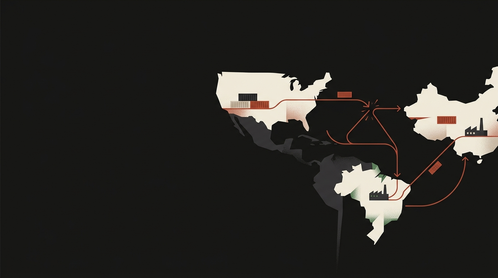

Research
Following the connections that reshape supply chains.
Our research moves from geopolitical change to company decisions, shared dependencies and regional consequences. It is also the evidence behind every client engagement.
Flagship program · Geopolitical triads
Beyond Bilateral Exposure
This study examines how economic tensions between the United States and China are reshaping supply chains involving Brazil. It uses data analytics and company interviews to identify which products and industries are changing and how companies are responding.
It also asks whether Brazil is building a more strategic production role or becoming an intermediary exposed to greater geopolitical and trade risk.

Regional intelligence · 2017 → 2025
Greater Cincinnati's changing trade geography
A preliminary look at how the Cincinnati–Lawrenceburg port district's trade partners, sourcing distances and product–country patterns have shifted, alongside the sharp rise in duty costs across the wider customs district in 2025.
Open the interactive analysisAlso underway
Other programs and case studies
Invisible Infrastructure
How firms come to share vulnerability through energy, cloud systems, telecommunications, positioning services and other enabling systems they rarely see.
Where Research Begins
Undergraduate researchers investigate GPS disruption, tariffs, industrial policy, drones, cybersecurity and regional supply chains.
From the Strait of Hormuz to a lipstick
How oil markets, biodiesel policy and palm oil link a disruption in the Gulf to the cost of a cosmetic ingredient, and why a standard supplier map misses it.
Upcoming · January 22, 2027
Supply Chain Geopolitics Forum
A regional forum that brings business leaders, researchers, students and public institutions together around the geopolitical forces changing supply chains and competitiveness.
Ask about attending